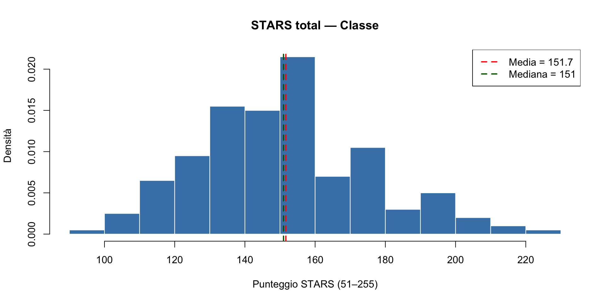
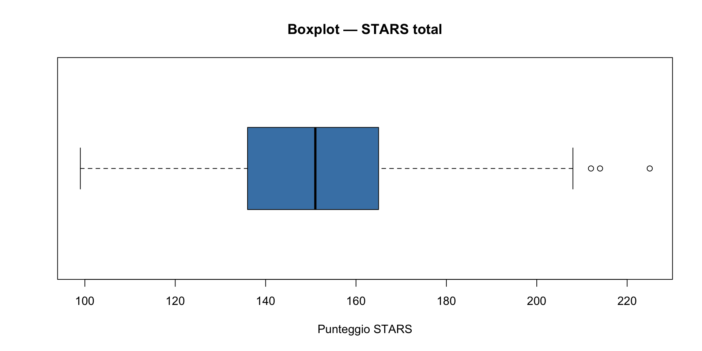
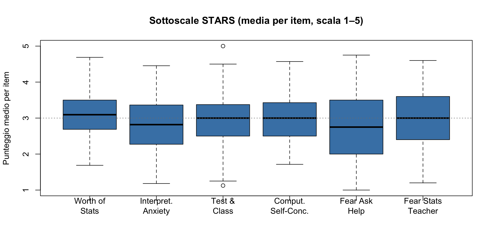
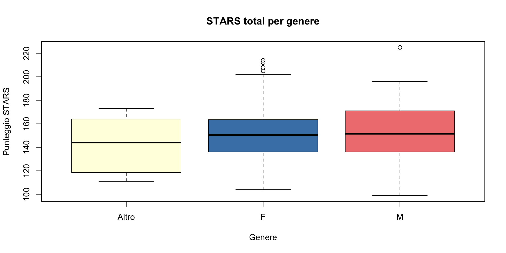
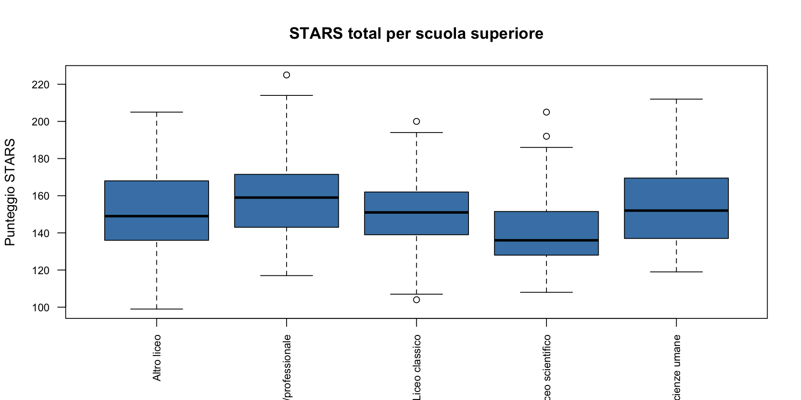
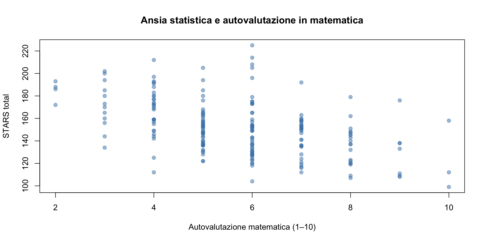

Statistica descrittiva
Quando i numeri nascondono (e quando rivelano) la realtà
![]()
29 ottobre 2026
Il paradosso della sintesi statistica
La domanda epistemologica di fondo
Nella prima parte della lezione abbiamo imparato a importare e visualizzare i dati.
Ora affrontiamo una domanda più sottile:
possiamo riassumere una distribuzione con pochi numeri senza perdere informazioni essenziali?
La risposta breve è: dipende.
La risposta lunga è ciò che esploreremo oggi.
Il problema del riassunto
Francis Anscombe (1973) ha mostrato che quattro dataset con identiche statistiche descrittive possono avere distribuzioni completamente diverse.
Datasaurus Dozen (Matejka & Fitzmaurice, 2017) ha esteso questo risultato: 13 dataset con stessa media, stessa varianza, stessa correlazione — ma forme completamente diverse.
Lezione epistemologica: i riassunti numerici nascondono informazioni. La visualizzazione le rivela.
Perché allora usare riassunti numerici?
Se i grafici sono così informativi, perché non usare solo quelli?
Ragioni pratiche:
- i numeri sono più facili da comunicare in abstract, tabelle o meta-analisi;
- permettono confronti precisi tra gruppi;
- sono essenziali per fare inferenza statistica.
Ma attenzione: i riassunti numerici sono utili solo se sappiamo cosa rappresentano e quando possono ingannare.
Questo è il cuore della lezione di oggi.
I vostri dati
Nella prima lezione avete compilato la STARS (Statistical Anxiety Rating Scale) — un questionario di 51 domande che misura l’ansia verso la statistica.
Per ciascuno di voi ho calcolato un punteggio totale (STARS_total): la somma delle risposte a tutti i 51 item, su una scala da 51 (nessuna ansia) a 255 (massima ansia).
Oggi usiamo questi dati per capire come si riassume una distribuzione — e quando il riassunto sia ingannevole.
Tre domande fondamentali
Di fronte a un insieme di dati, le prime domande sono:
- dove si concentrano i valori? → tendenza centrale;
- quanto sono dispersi? → variabilità;
- che forma ha la distribuzione? → simmetria e code.
Queste tre domande bastano per avere un quadro sintetico dei dati.
Ma solo se le risposte sono interpretate correttamente.
Parte I: concetti e calcoli
Un sottocampione per calcolare a mano
Per capire i concetti, lavoriamo prima su un piccolo sottocampione di 10 studenti.
Punteggi STARS_total (già ordinati):
\[112, 128, 133, 136, 145, 148, 151, 158, 164, 192\]
Sono 10 numeri. Li usiamo per fare tutti i calcoli a mano, passo per passo.
Perché a mano? Perché capire come si calcolano questi numeri è essenziale per capire cosa significano — e quando possono ingannarci.
1. La media
La media (o media aritmetica) è la somma dei valori divisa per il numero di osservazioni:
\[\bar{x} = \frac{\sum_{i=1}^{n} x_i}{n}\]
Calcoliamo:
\[\bar{x} = \frac{112 + 128 + 133 + 136 + 145 + 148 + 151 + 158 + 164 + 192}{10}\]
\[= \frac{1467}{10} = 146.7\]
Che cosa ci dice la media?
La media è il baricentro dei dati: il punto in cui la distribuzione “si bilancia”.
Se immaginiamo i dati come pesi su un’asta, la media è il punto di equilibrio.
STARS_total = 146.7 significa che, in media, questi 10 studenti hanno un livello di ansia statistica moderato (su una scala 51–255).
Ma questo è vero solo se la distribuzione è simmetrica.
Il primo inganno: la media nasconde la forma
Guardate questi due gruppi:
Gruppo A
144, 145, 146, 147, 148
Media = 146
Gruppo B
100, 120, 146, 172, 192
Media = 146
Stessa media. Distribuzioni completamente diverse.
Gruppo A: valori concentrati attorno alla media.
Gruppo B: valori sparsi su un ampio range.
Lezione epistemologica:
- la media da sola non basta;
- serve una misura di dispersione.
2. La mediana
La mediana è il valore che divide i dati ordinati in due metà uguali: il 50% sta sotto, il 50% sta sopra.
Con \(n = 10\) (pari), la mediana è la media dei due valori centrali — il 5° e il 6°:
\[\text{Med} = \frac{x_{(5)} + x_{(6)}}{2} = \frac{145 + 148}{2} = 146.5\]
Con \(n\) dispari, la mediana sarebbe semplicemente il valore centrale.
Media e mediana a confronto
| Valore | |
|---|---|
| Media | 146.7 |
| Mediana | 146.5 |
La media è leggermente più alta della mediana. Perché?
Guardiamo i dati: il punteggio 192 è piuttosto lontano dagli altri. La media “sente” questo valore estremo e viene tirata verso l’alto.
La mediana, invece, dipende solo dalla posizione dei valori, non dalla loro grandezza. È più robusta rispetto ai valori estremi.
Domanda epistemologica:
quale delle due rappresenta meglio il “centro” di questa distribuzione?
Un esperimento mentale
Cosa succede se il punteggio 192 diventa 250?
| Prima | Dopo | |
|---|---|---|
| Media | 146.7 | 152.5 |
| Mediana | 146.5 | 146.5 |
La media cambia di quasi 6 punti. La mediana non cambia affatto.
Questo illustra un principio importante: la media è sensibile ai valori estremi, la mediana no.
Implicazione per la pratica professionale
Se i vostri dati hanno outlier (es. un paziente con punteggio estremo), la media può essere ingannevole.
Il legame con la crisi della replicabilità
Molti studi che non si sono replicati avevano questo problema:
- campioni piccoli (\(n < 30\));
- presenza di outlier non riconosciuti;
- media riportata come unico riassunto;
- nessuna visualizzazione dei dati.
Risultato: la media rappresentava male il fenomeno sottostante.
La replica, con altri partecipanti, mostrava una distribuzione diversa — e quindi una media diversa.
3. La variabilità: perché ci serve
Due gruppi possono avere la stessa media ma essere molto diversi:
Gruppo A
144, 145, 146, 147, 148
Media = 146
Gruppo B
100, 120, 146, 172, 192
Media = 146
La media da sola non basta. Serve una misura di quanto i dati sono dispersi attorno alla media.
Questa dispersione non è “rumore” da eliminare. È informazione essenziale sul fenomeno.
La deviazione dalla media
Per ciascun dato, calcoliamo quanto si discosta dalla media:
\[d_i = x_i - \bar{x}\]
Domanda: perché questo è utile?
Risposta: perché ci dice quanto ogni osservazione è “lontana” dal valore centrale. Questa distanza è la base di tutte le misure di variabilità.
| \(x_i\) | \(x_i - 146.7\) |
|---|---|
| 112 | \(-34.7\) |
| 128 | \(-18.7\) |
| 133 | \(-13.7\) |
| 136 | \(-10.7\) |
| 145 | \(-1.7\) |
| 148 | \(+1.3\) |
| 151 | \(+4.3\) |
| 158 | \(+11.3\) |
| 164 | \(+17.3\) |
| 192 | \(+45.3\) |
Le deviazioni si annullano
\[\sum_{i=1}^{n} (x_i - \bar{x}) = 0\]
Verifichiamolo:
\[(-34.7) + (-18.7) + \ldots + (+17.3) + (+45.3) = 0\]
Questo è sempre vero, per qualunque insieme di dati. È una proprietà della media: le deviazioni positive e negative si compensano esattamente.
Quindi la somma delle deviazioni non è una buona misura della variabilità.
Problema tecnico: come misuriamo la variabilità se le deviazioni si annullano?
La soluzione: elevare al quadrato
Per evitare che le deviazioni si annullino, le eleviamo al quadrato:
\[d_i^2 = (x_i - \bar{x})^2\]
Elevare al quadrato ha due effetti:
- elimina il segno negativo (tutti i quadrati sono positivi);
- penalizza le deviazioni grandi più di quelle piccole.
Perché il quadrato e non il valore assoluto? Ragioni matematiche (derivabilità) e statistiche (proprietà della distribuzione normale).
| \(x_i\) | \(d_i\) | \(d_i^2\) |
|---|---|---|
| 112 | \(-34.7\) | 1204.09 |
| 128 | \(-18.7\) | 349.69 |
| 133 | \(-13.7\) | 187.69 |
| 136 | \(-10.7\) | 114.49 |
| 145 | \(-1.7\) | 2.89 |
| 148 | \(+1.3\) | 1.69 |
| 151 | \(+4.3\) | 18.49 |
| 158 | \(+11.3\) | 127.69 |
| 164 | \(+17.3\) | 299.29 |
| 192 | \(+45.3\) | 2052.09 |
Notate come il punteggio 192 (deviazione +45.3) contribuisce con 2052.09 alla somma — molto più di tutti gli altri.
La varianza
La varianza è la media delle deviazioni al quadrato:
\[s^2 = \frac{\sum_{i=1}^{n}(x_i - \bar{x})^2}{n - 1}\]
\[s^2 = \frac{1204.09 + 349.69 + \ldots + 2052.09}{10 - 1} = \frac{4358.10}{9} = 484.23\]
Interpretazione: la varianza misura quanto, in media, i dati sono lontani dalla media (al quadrato).
Perché \(n - 1\) e non \(n\)?
Dividiamo per \(n - 1\) (e non per \(n\)) perché abbiamo “usato” i dati una volta per calcolare la media. Questa correzione (detta correzione di Bessel) rende la stima della variabilità non distorta.
Spiegazione intuitiva: quando calcoliamo la media, “consumiamo” un grado di libertà. Ci restano \(n - 1\) valori “liberi” di variare.
Il dettaglio tecnico (i “gradi di libertà”) lo riprenderemo più avanti. Per ora, basta ricordare: si divide per \(n - 1\).
Implicazione pratica: con campioni piccoli, questa correzione fa molta differenza.
La deviazione standard
La varianza è espressa in unità al quadrato (punti²). Per tornare alla scala originale, calcoliamo la radice quadrata:
\[s = \sqrt{s^2} = \sqrt{484.23} = 22.01\]
La deviazione standard (\(s = 22.01\)) ci dice che, mediamente, i punteggi si discostano dalla media di circa 22 punti.
Interpretazione epistemologica:
la deviazione standard quantifica l’incertezza nella distribuzione.
Non è rumore — è la variabilità intrinseca del fenomeno.
Riepilogo: le misure calcolate
| Misura | Formula | Valore |
|---|---|---|
| Media | \(\bar{x} = \frac{\sum x_i}{n}\) | 146.7 |
| Mediana | valore centrale | 146.5 |
| Varianza | \(s^2 = \frac{\sum(x_i - \bar{x})^2}{n-1}\) | 484.23 |
| Dev. standard | \(s = \sqrt{s^2}\) | 22.01 |
Domanda critica: questi quattro numeri bastano a descrivere completamente la distribuzione?
Risposta: dipende dalla forma della distribuzione.
4. Altre misure di dispersione
Il campo di variazione (range)
\[\text{Range} = x_{\max} - x_{\min} = 192 - 112 = 80\]
È semplice, ma dipende solo dai due valori estremi — è molto sensibile agli outlier.
Problema epistemologico:
se avete un solo outlier estremo, il range “esplode” — ma non vi dice nulla sulla maggioranza dei dati.
I quartili
I quartili dividono i dati ordinati in quattro parti uguali:
- \(Q_1\) (25° percentile): il valore sotto il quale cade il 25% dei dati;
- \(Q_2\) (50° percentile): è la mediana;
- \(Q_3\) (75° percentile): il valore sotto il quale cade il 75% dei dati.
Lo scarto interquartile (IQR)
Lo scarto interquartile è:
\[\text{IQR} = Q_3 - Q_1\]
Misura la dispersione del 50% centrale dei dati — ignorando i valori estremi.
- Vantaggio: robusto rispetto agli outlier.
- Svantaggio: ignora le code della distribuzione.
5. La forma della distribuzione
Oltre a “dove” e “quanto”, ci interessa come sono distribuiti i dati.
La simmetria (o asimmetria) descrive se la distribuzione è bilanciata o se ha una “coda” più lunga da un lato.
Asimmetria positiva
Coda a destra
Media > Mediana
Simmetrica
Code uguali
Media ≈ Mediana
Asimmetria negativa
Coda a sinistra
Media < Mediana
Nel nostro sottocampione
Media (146.7) > Mediana (146.5): la distribuzione è leggermente asimmetrica a destra.
Ha senso: il punteggio 192 è più distante dalla media rispetto al punteggio 112. C’è una “coda” verso valori alti di ansia.
Implicazione: quando media > mediana, state sottorappresentando la maggioranza dei dati (che sono più bassi della media).
Domanda epistemologica: quale delle due (media, mediana) è più “rappresentativa” del gruppo?
Perché la forma conta
Molti test statistici tradizionali (test t, ANOVA) assumono che i dati siano approssimativamente normali (simmetrici, unimodali).
Se la distribuzione è fortemente asimmetrica:
- la media potrebbe non essere rappresentativa;
- i test potrebbero dare risultati inaffidabili;
- le stime di incertezza potrebbero essere sbagliate.
Lezione epistemologica: conoscere la forma della distribuzione non è un dettaglio tecnico — è essenziale per fare inferenza corretta.
Parte II: applicazione ai dati reali
Importiamo i dati
Nella pratica userete:
Diamo un’occhiata:
id genere scuola_superiore autovalutazione_math STARS_total WS IA TCA
1 P001 F Liceo scienze umane 5 164 50 31 24
2 P002 F Liceo scientifico 4 192 67 43 27
3 P003 F Altro liceo 10 112 51 15 10
4 P004 M Altro liceo 10 99 33 19 17
5 P005 F Liceo scienze umane 5 128 38 33 13
6 P006 F Altro liceo 5 153 44 41 30
CSC FAH FST
1 30 13 16
2 25 13 17
3 18 4 14
4 17 6 7
5 21 10 13
6 16 14 8Struttura del dataset
[1] 200 11 [1] "id" "genere" "scuola_superiore"
[4] "autovalutazione_math" "STARS_total" "WS"
[7] "IA" "TCA" "CSC"
[10] "FAH" "FST" Abbiamo 200 studenti e 11 variabili: il codice identificativo, genere, tipo di scuola superiore, autovalutazione in matematica, il punteggio totale STARS e le 6 sottoscale.
Nota metodologica: questo campione è più grande del sottocampione di 10 — vedremo se le conclusioni cambiano.
Primo sguardo: summary()
In una sola riga abbiamo: minimo, primo quartile, mediana, media, terzo quartile, massimo.
Confronto epistemologico: il sottocampione di 10 aveva media 146.7. Il campione completo ha media ~151.7. Perché questa differenza?
Risposta: variabilità campionaria. Con \(n\) piccolo, la media è instabile.
Media, mediana e deviazione standard
[1] 151.665[1] 151[1] 24.19587Confrontiamo con il sottocampione di 10: la media (\(\approx\) 151.7) e la deviazione standard (\(\approx\) 24.2) sono simili ai valori calcolati a mano. Il sottocampione era rappresentativo!
Ma questo è un caso fortunato. Con \(n = 10\) casuale, avreste potuto ottenere valori molto diversi.
Varianza e deviazione standard: il legame
[1] 585.44[1] 585.44[1] 24.19587In R: var() calcola la varianza (con \(n-1\)), sd() la deviazione standard.
Ricordate: varianza e deviazione standard misurano la stessa cosa (dispersione) su scale diverse (quadratica vs originale).
Range e IQR
[1] 99 225[1] 12625% 75%
136 165 [1] 29Confronto: range = 126 vs IQR = 29. L’IQR è molto più piccolo — perché ignora i valori estremi.
L’istogramma dei dati degli studenti
hist(d$STARS_total,
freq = FALSE,
col = "steelblue",
border = "white",
main = "STARS total — Classe",
xlab = "Punteggio STARS (51–255)",
ylab = "Densità",
breaks = 15
)
abline(v = mean(d$STARS_total), col = "red", lwd = 2, lty = 2)
abline(v = median(d$STARS_total), col = "darkgreen", lwd = 2, lty = 2)
legend("topright",
legend = c(
paste("Media =", round(mean(d$STARS_total), 1)),
paste("Mediana =", round(median(d$STARS_total), 1))
),
col = c("red", "darkgreen"), lwd = 2, lty = 2
)
Leggere l’istogramma
La distribuzione dei punteggi STARS è:
- approssimativamente simmetrica, con un lieve accumulo verso destra;
- la media (linea rossa) è leggermente a destra della mediana (linea verde);
- questo indica una lieve asimmetria positiva: qualche studente con ansia particolarmente alta “tira” la media verso l’alto.
Domanda critica: se avessimo riportato solo la media (senza visualizzazione), avremmo colto questa asimmetria?
Risposta: no. Ecco perché la visualizzazione è epistemologicamente essenziale.
Il boxplot: un’altra visualizzazione
Il boxplot (o diagramma a scatola) riassume la distribuzione con cinque numeri:
Vantaggio del boxplot: mostra simultaneamente tendenza centrale (mediana), dispersione (IQR) e outlier.

Come si legge un boxplot
- La scatola va da \(Q_1\) a \(Q_3\) → contiene il 50% centrale dei dati.
- La linea interna è la mediana.
- I baffi si estendono fino al dato più estremo entro \(1.5 \times \text{IQR}\) dal bordo della scatola.
- I punti oltre i baffi sono potenziali outlier.
Implicazione epistemologica: il boxplot identifica automaticamente gli outlier usando una regola oggettiva — non una decisione arbitraria del ricercatore.
Questo previene il “garden of forking paths”: non potete decidere dopo aver visto i dati se un valore è “troppo estremo”.
Confrontiamo le sottoscale
Quali aspetti dell’ansia statistica sono più pronunciati in questo campione?

Interpretazione: le sottoscale con mediana più alta (sopra 3) rappresentano gli aspetti dell’ansia più pronunciati.
Confronto per genere
Domanda epistemologica: se osserviamo una differenza tra gruppi, è sistematica o dovuta al caso?

Notiamo differenze? Nelle prossime lezioni impareremo strumenti per stabilire se le differenze osservate sono sistematiche o dovute al caso.
Anticipazione: l’inferenza bayesiana ci darà la probabilità che la differenza sia reale — non solo un sì/no binario.
Confronto per tipo di scuola superiore

Osservazione: i licei scientifici sembrano avere ansia statistica leggermente più bassa. Ipotesi plausibile? Sì, più esposizione alla matematica potrebbe ridurre l’ansia.
Ma attenzione: questa è un’esplorazione, non una conferma. Serve inferenza per concludere.
Ansia e autovalutazione in matematica

Un’associazione negativa:
- chi si valuta meglio in matematica tende ad avere meno ansia statistica.
Lo quantificheremo con la correlazione in una lezione futura.
Domanda epistemologica: questa associazione è causale? (es. migliorare in matematica riduce l’ansia?) O è confusa? (es. studenti più sicuri in generale valutano meglio sia matematica sia statistica?)
Risposta: l’esplorazione suggerisce le ipotesi. L’inferenza (con disegni appropriati) le valuta.
Il riassunto numerico completo
Numerosità del campione:
Media STARS:
Mediana STARS:
Deviazione standard:
Valore minimo STARS:
Valore massimo STARS:
IQR STARS:
Il vocabolario della statistica descrittiva
| Concetto | Domanda | Misure principali |
|---|---|---|
| Tendenza centrale | Dove si concentrano i dati? | Media (\(\bar{x}\)), Mediana |
| Variabilità | Quanto sono dispersi? | Varianza (\(s^2\)), Dev. standard (\(s\)), IQR |
| Forma | Come sono distribuiti? | Simmetria, confronto media vs mediana |
Queste misure, insieme all’istogramma e al boxplot, sono gli strumenti di base per descrivere qualunque distribuzione.
Ma solo se interpretate nel contesto della visualizzazione.
Collegamento con gli obiettivi epistemologici
Cosa abbiamo imparato oggi (e perché conta)
Oggi abbiamo imparato le formule per calcolare media, mediana, varianza e deviazione standard.
Ma l’obiettivo epistemologico era più profondo, ovvero capire che
i riassunti numerici sono utili, ma possono ingannare. La visualizzazione è essenziale per capire cosa c’è davvero nei dati.
Questo è il primo passo verso un approccio rigoroso all’inferenza.
Il legame con la crisi della replicabilità
Molti studi che non si sono replicati avevano questo in comune:
- riassunti numerici senza visualizzazione → pattern nascosti non riconosciuti;
- media come unico riassunto → distribuzioni asimmetriche o bimodali ignorate;
- outlier non gestiti → stime distorte;
- variabilità non quantificata → incertezza sottostimata.
L’esplorazione sistematica previene tutti questi problemi.
L’importanza della variabilità
Nella pratica psicologica, la variabilità individuale non è rumore da eliminare.
È, piuttosto, il cuore stesso dell’informazione clinica e scientifica.
- Nel lavoro clinico: la variabilità tra pazienti ci dice quanto un intervento possa essere generalizzato o debba invece essere personalizzato.
- Nella valutazione psicodiagnostica: la dispersione dei punteggi in un test ne riflette la sensibilità e l’affidabilità nel catturare le differenze individuali.
- Nelle organizzazioni e nei gruppi: la variabilità nelle risposte dei dipartimenti o dei team rivela se una policy o un training funziona in modo equo ed efficace per tutti, o solo per alcuni profili.
Lezione epistemologica:
trascurare la variabilità significa perdere di vista la complessità della mente e del comportamento umano, appiattendo ciò che per natura è dinamico e differenziato.
Verso la prossima lezione
Oggi abbiamo imparato a riassumere distribuzioni con numeri e grafici.
Nelle prossime lezioni:
- capiremo come la variabilità campionaria influenza le nostre conclusioni;
- vedremo come la probabilità formalizza l’incertezza;
- inizieremo a costruire le basi per l’inferenza bayesiana.
Sempre con lo stesso spirito: esplorare prima di concludere, visualizzare prima di riassumere e quantificare l’incertezza.
Un ultimo messaggio
Queste competenze — importare, esplorare, riassumere, visualizzare — non sono “preliminari” all’analisi “seria”.
Sono il fondamento di qualunque analisi rigorosa.
La differenza tra uno studio che si replica e uno che fallisce spesso sta qui:
- chi esplora i dati sistematicamente vede i problemi prima di fare inferenza;
- chi salta questo passaggio fa inferenza su pattern che non ha mai verificato.
Open Science in pratica: trasparenza, riproducibilità e rigore.
Per approfondire
Il materiale di questa lezione corrisponde a:
- Cap. 16 — Esplorare distribuzioni univariate
- Cap. 18 — Indicatori di tendenza centrale e variabilità
Prossima lezione: introduzione alla sintassi R più avanzata (vettori, dataframe, operazioni di base) e i primi grafici con ggplot2 — verso una visualizzazione più sofisticata e informativa.